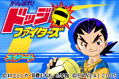
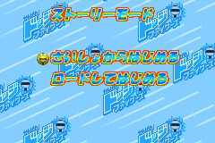

Ganbare! Dodge Fighters (Japan)
Stateless / Passcode 💾 MultiBoot 🎮 4P Link 📡 Wireless
Cartridge Identity
- Game Code
BG8J(FamilyBG8)- Header Title
DODGEBALL- Maker / Revision
B2/ rev0- ROM Size
- 4.0 MiB (4,194,304 B)
- Save Media
None / Unknown- SHA-256
7b87f76abc1c3727ee81e61672221c66b39601ce2142bb5aced7cc2ec7244a11- Engine / SDK Group
comm-001(196 families)
Screenshots


Niche & Rare Accessories
Detected niche/rare GBA accessory support: 🔌 Wireless Adapter (RFU_V1024).
Full 343-ROM corpus breakdown in the Cartridge Hardware & Niche Accessories Reference · auto-detected from ROM bytes via
gbakit inspect.
- Wireless Adapter (RFU_V1024)
- Nintendo Wireless Adapter (
AGB-015) SDKRFU_V1024+RFU-MBOOT
Link Cable & Multiplayer Communications
This title contains detected communication capabilities: 💾 MultiBoot 🎮 4P Link 📡 Wireless.
Detailed protocol specifications, SIO registers, Joybus commands, and MultiBoot sequences are documented in the Link & Multiplayer Reference.
- Multi-Player SIO (4P)
- 16-bit ring network · SIOCNT (
0x04000128) literals:0x022394,0x022e6c,0x0236a0· SIODATA32/SIOMULTI0 (0x04000120) literals:0x023aac,0x023c14,0x023c78 - Nintendo Wireless Adapter
- AGB-015 RFU driver signature
RFU_V1024at offset0x061b7c - Nintendo Wireless Adapter
- AGB-015 RFU driver signature
RFU_V1024at offset0x291ea8 - Nintendo Wireless Adapter
- AGB-015 RFU driver signature
RFU_V1024at offset0x2cdbe0 - Nintendo Wireless Adapter
- AGB-015 RFU driver signature
RFU-MBOOTat offset0x061b88 - Nintendo Wireless Adapter
- AGB-015 RFU driver signature
RFU-MBOOTat offset0x291eb4 - Nintendo Wireless Adapter
- AGB-015 RFU driver signature
RFU-MBOOTat offset0x2aa094 - Nintendo Wireless Adapter
- AGB-015 RFU driver signature
NINTENDOSio32IDat offset0x061b94 - Nintendo Wireless Adapter
- AGB-015 RFU driver signature
NINTENDOSio32IDat offset0x291ec0 - Nintendo Wireless Adapter
- AGB-015 RFU driver signature
NINTENDOSio32IDat offset0x2cdbf8 - Single-Cart MultiBoot
- Single-Cartridge MultiBoot (Download Play) client/server handler · Thumb SWI 0x25 (
0xDF25):0x02a9e2,0x0410de,0x07724c,0x0bd4a6· SDK signatures:MBOOTat0x02cdfa
Cartridge Storage Architecture: Stateless / Passcode
Zero non-volatile battery hardware: This cartridge PCB contains ROM only (no SRAM, Flash, or EEPROM chips). Progression is preserved via on-screen passcodes or session-only gameplay. No
.sav file is generated or required.
ROM Assets, Compression & Audio
- BIOS Compression
- LZ77 (
0x10): 359 streams · RLE (0x30): 0 streams - ROM Pointer Tables
- 24 tables (2 pointing to validated compressed streams)
- SDK Backup Tags
EEPROM_V124,SRAM_F_V103
Asset Map (formatkit.asset-map.v1)
Download BG8J-r0-7b87f76abc1c3727.asset-map.json.gz (39,917 B (39.0 KiB)) Verified PASS · 55.88% coverage
| Metric | Bytes / Value | Entries |
|---|---|---|
| Identified | 1,188,097 B (1.13 MiB) (28.33%) | 505 |
| Mapped | 0 B (0.00%) | 0 |
| Opaque | 1,155,640 B (1.10 MiB) (27.55%) | 1 |
| Unknown | 1,850,567 B (1.76 MiB) (44.12%) | 377 |
| Total ROM Size | 4,194,304 B (4.00 MiB) | 883 |
| Coverage % | 55.88% | — |
| Entries w/ Code Refs | 523 / 883 (59.23%) | — |
Top Identified Formats: compress.bios-lz77 (367 · 919,121 B (897.6 KiB)) · rom.multiboot (1 · 234,720 B (229.2 KiB)) · gfx.gba-palette (135 · 33,600 B (32.8 KiB)) · audio.m4a-song-table (1 · 464 B) · gba.rom-header (1 · 192 B)
Largest unknown Extents (Headerless / Custom Asset Candidates)
| Offset | Size | Shannon Entropy | Code Refs |
|---|---|---|---|
0x001662E8 | 621,596 B (607.0 KiB) | 2.510 bits/B | 1 |
0x002AA090 | 245,048 B (239.3 KiB) | 5.871 bits/B | 2 |
0x00033850 | 189,196 B (184.8 KiB) | 6.825 bits/B | 8 |
0x002126AC | 52,240 B (51.0 KiB) | 2.914 bits/B | 0 |
0x00149087 | 42,705 B (41.7 KiB) | 5.548 bits/B | 0 |
gzip -dk BG8J-r0-7b87f76abc1c3727.asset-map.json.gz && gbakit map verify rom.gba BG8J-r0-7b87f76abc1c3727.asset-map.json
gbakit assets export rom.gba --asset-map BG8J-r0-7b87f76abc1c3727.asset-map.json -o out/Text, Fonts & Scene Data
- Primary Text Encoding
- LZ77-compressed ASCII (
1ASCII strings ·200Shift-JIS runs ·1LZ77 ASCII blocks) - Font & VWF Indicators
- No VWF Table 1bpp Font · BIOS SWIs: BitUnPack
0x10:35· LZ770x11/12:30· Huffman0x13:20· RLE0x14/15:25 - Scene & Packaging
12ROM pointer tables (≥32 entries,2≥200) ·0relativeu32TOCs ·136OAM metasprite hits
Hardware MMIO Subsystems
ppu_display0x8005a64